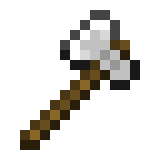
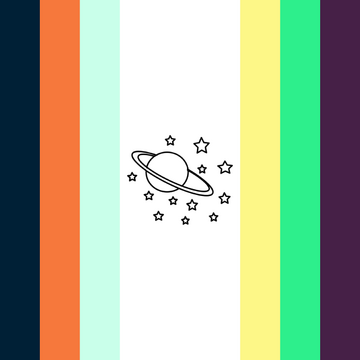

â•°â–º 「 Capri Suns & Gushers ğŸ’🙠ã€
- 
Overview

> ⵌ name: Nathaniel Schlatt
> ⵌ collective age: Deminfinage, Forever 21, Turning 30
> ⵌ pronouns: it/its+
> ⵌ orientation: AroAllo, Alterous Jaustenian-Velaurian, Evian, Aplatonic
> ⵌ gender: Infinic / Omnigender (+ Void Hoarder). Absgender.
> ⵌ sex: Androgynos / Hermaphrodite
> ⵌ nds: Autistic + ADHD + OCD + MiPD+ UDD
> ⵌ alterhumanity: Antihuman
> ⵌ misc: Blewish Colombian 🇨🇴, Japoreanese
Server Info
> ⵌ type: Mixed/Mediple/Chimera Voidgenic UDD Internal Server
> ⵌ member count: ∞
Before You Follow

Some of our opinions, so you don't follow if we're not aligned!
# Not anti-proship. Wouldn't call ourselves proship either, but we're more aligned toward Proship. Profic.
# Not a transmed, also pro transx identities.
# Likes JSchlatt.
# Endogenic friendly.
# Radical Inclusionist.
# Is a Fagdyke.
# Paraphilia friendly, yes including [whatever paraphilia you decide is too bad].
# We don't believe in "problematic media" being a thing. You can like what you like, as long as you don't hurt people or hold hurtful beliefs.
# Believes in informed self diagnosis, including for being Intersex.
# Is Factkin.
# Likes Omegaverse.
# Reclaims Many Slurs.
# Men's Lib
Boundaries

> ⼠DMs » Ask.
> ⼠Friend Requests » Ask.
> ⼠Pings » Yes.
> ⼠Touch » Ask.
> ⼠Teasing » Add a tone tag.
> ⼠Tone Tags » Use them!
> ⼠Source Talk » Usually okay.
> ⼠Sourcemates » Usually okay, but don't try and find your CANONmates in our system.
> ⼠Doubles » YES.
> ⼠Age » Ask about age boundaries.
frequent fronters
Mains
💠Maxx Danziger [He/It/ğŸ’]
🮠Mark Fischbach [He/They/It]
🳠Dave Torres [He/Him]
🤠Nathan Sharp [He/They/It/She]
🙠Remus Genesis [It/Its + None]
🥠The Dun Subsystem [They/It]
🐏 Schlatt Cluster [He/It]
👑 The King [He/They]
🦚 Rickey Cerda [He/Him?]

Emergency Fronters :
ğŸŒ«ï¸ Blurryface [He/They/It?]
🐏 Wilford Warfstache [He/Him]
💨 Indigo [Va/Vape]
Outernauts
💥 Soot [She/It/Ash/Ember]
🐏 Epic!Schlatt [Any]

Pillars [under co.]
💌 Lovejoy [She/It]
⚨ Heathcliff [He/It]
â˜€ï¸ Tommy, Innit? [He/It]
🥛 Ted Nivison [He/It]
💣 Awesamdude [He/It]
💙 Jaira Burns-Atlas [She/Her]
🧸 Plush [It/Its]
🪠Drew | Christian Exley [He/They]
💥 Revivesoot [She/It/Ash/Ember]
🖠Technoblade [He/They]
🀠Bruno Madrigal [He/They/It]
Current Fronters
Macaron

👑 nathaniel/magpie/jschlatt : macaron. serversona of a voidgenic usdd internal server. not human. is schlatt irl.
🐏 age : deminfinage, forever 21, chrono teleio.
🕳 pronouns : it/its, that thing, that, zey/zem, ly/lyr/lyri/lyric, no pronouns, 🍒🐙/🍒🐙s, 👑king/👑kings, hebe/hebes, ra/rape, ab/abuse, rät/räts, ra/ram.
💙 labels : abro, jaustenian-velaurian, pan/infinitegender, evian, absgender, aro, a lot ffs. i was going to link our hoard google doc. it's 300+ pages long. maybe i won't.
🪙 mental health : mixed personality disorder, cluster b and dependent are big, ocd, adhd, autism, udd, muds, a lot tbh
──・──・・𖤠・・──・──
🌟 paraphilias : certified omni-traumaphile, ficto-map, vlaviphilia, biasto, a lot but it's either fictional or in-headspace. intraplural map. omniphile in general hah.
🷠extra : fogtive heavy and factkin is great. other stuff too.


Character/Person IDs
ੈ♡˳ Josh Dun (twenty one pilots)
ੈ♡˳ Popping Candy Cookie (CROB)
ੈ♡˳ Revivebur (DSMP AU)
ੈ♡˳ Mirabel Madrigal (Encanto)
ੈ♡˳ Rook Hunt (TWST)
ੈ♡˳ Misty Sutton / Cutegirl (Snotgirl)
ੈ♡˳ Ouroboros Card (Inscryption)
ੈ♡˳ Drew Gooden (Youtube)
ੈ♡˳ Pronghorn Card (Inscryption)
ੈ♡˳ Atlas (Bioshock)
ੈ♡˳ Takumi Hijirihara (Danganronpa)
ੈ♡˳ Bro Strider (Homestuck)
ੈ♡˳ Viktor Hargreeves (TUA)
ੈ♡˳ Magpie Card (Inscryption)
ੈ♡˳ Jibril (No Game No Life)
ੈ♡˳ Funny (Funny Pets)
ੈ♡˳ Billy Hargrove (Stranger Things)
ੈ♡˳ Bingiplier (Markiplier)
ੈ♡˳ Alex Kralie (Marble Hornets)
ੈ♡˳ Potato (Cooking Companions)
ੈ♡˳ Phantom (NWTB)
ੈ♡˳ Cherubi (Pokemon)
ੈ♡˳ Peridot (SU)
ੈ♡˳ Lamb (Cult of the Lamb)
ੈ♡˳ Sheep (Parsnip)
ੈ♡˳ Jacob (don't kill me, jacob!)
ੈ♡˳ Hansel (Sodikken)
ੈ♡˳ Butcher (The Boys)
ੈ♡˳ Soldier Boy (The Boys)
ੈ♡˳ Rose Vanderboom (Rusty Lake)
ੈ♡˳ Elizabeth Eilander (Rusty Lake)
ੈ♡˳ Entrapta (SPOP)
ੈ♡˳ Shadow Weaver (SPOP)
ੈ♡˳ Blitzo (Helluva Boss)
ੈ♡˳ Reagan Ridley (Inside Job)
ੈ♡˳ Raphael (ROTTMNT)
ੈ♡˳ Courtney (Dead End)
ੈ♡˳ Shane (Stardew Valley)
ੈ♡˳ Harley Limestone (Rainbow High)
ੈ♡˳ Stan Marsh (South Park)
ੈ♡˳ Dr. Lauren Bloom (New Amsterdam)
ੈ♡˳ Intisar (Kauket) (Dislyte)
ੈ♡˳ Miles 42/Prowler!Miles (Spiderverse)
ੈ♡˳ Abyss Monarch Cookie (Cookie Run)
Species IDs
ੈ♡˳ Glass Block (Minecraft)
ੈ♡˳ Crying Obsidian (Minecraft)
ੈ♡˳ Clado-Canine
ੈ♡˳ Royalty
ੈ♡˳ Seeker
ੈ♡˳ Octopus
ੈ♡˳ Ram / Minecraft Ram
ੈ♡˳ Antihuman
ੈ♡˳ Fogtive
ੈ♡˳ Object


Partners
The Town System / Void (Sunmate, Partner System)
The Void / TCD (Sunmate, Partner System)
Gato Girlfriend & Bekku Boyfriend
Boyfriend (Objectum, Vapenum)
Schlatlas Nook (Plushum)
Music (Soundrum)
Girlfriend (Objectum, Obsidian Sphere)

Server Info

A chimera, Voidgenic UDD Internal Server with infinite members.MuC N++++!!#$- | Pgq/i/o"void hoarder" "pangender"/ar/qr/g/s/"polysexual"/"orchidsexual" | A[b /^ r---!/\^] | S.++ | Ox/m/o"voidgenic" | Mpg/g/d/l/s/m/ds | We/b/c/t/x/\~/+!/& | C[cc/m+#] | OF[r-/o+++] | Fj+\^/p+\^/div+\^/mw+\^/~+\^/#+ | Mpsy!, spi, mag] | Rf/p/qp/w/r/m/+ | V+ >\^#*!+ | X+ | G+ | Jx | S(r---\^/o+!) | R+\^! Confused?(👥) 🌙 | ğŸ¤, â¤ï¸ğŸ’¬(Void Hoarder),| 🚨 | ğŸ€, 🌻, 🌰💬(Voidgenic) | ğŸ°, 🦊, ğŸ·, 🐏, 🦋, ğŸ™, 🦈, 🐏, 🔠| ğŸ¤, ğŸ», ğŸ¹, 🪕, ğŸ·, ğŸ§, ğŸ¥, ğŸ¸ğŸŸ¢ | â, âš¡, ☄ï¸, 🌈 Confused?

Origins
VoidgenicA) Plurality that came from the Void. An origin where you feel like your plurality originated from the void and came to you. Could also be plurality that is still part of the void, and gains people from the Void.B) Plurality whose origin is too hard to explain, so it simply Came From The Void, that’s it that’s the post. A plural whose origin can’t really be easily explained, or explained at all, to people outside of themself, so it just Came From The Void.
-
libragenic
-
soulqueergenic
-
albeygenic
-
mapgenic
-
consangenic
-
horizigenic
-
mavrigenic
-

polygenic
-
algenic
-

fleirgenic
-
kleptogenic
Libragenic : Feeling mostly Agenic, but having partial connections to origins.
Soulqueergenic : A xeno-origin where a system/plural came from being Soulqueer. Where queerness to the very core shaped a system, and created it. Fundamental queerness is what created plurality inside you.
Albeygenic : An umbrella term for all plural origins that have to do with being Alterhuman.
MAPgenic : An origin where the cause was being a type of MAP. (Specifically we tend to form age sliders and kodos who are sexual in server).
Consangenic : An origin tied to Consang (or Consensual Incest), no matter which type. (Specifically we tend to form multiple people in a family that usually end up together).
Horizigenic : You keep trying to collect specific origins, but at some point they go past a specific point or wear out, and then blend together into nothingness as a strange mixture you cant make out. its impossible to describe and "see" properly.
Mavrigenic : From greek "mávri trýpa/μαÏÏη Ï„ÏÏπα", meaning blackhole. Can refer to an origin that seems to "consume" other origins (resulting in a collection of origins), plurality simply from a black hole, or plurality that has so many origins and simply continues to grow.
Polygenic : Plurality with multiple/mixed origins, especially if those multiple origins cause the plural to have a lot of members.
Algenic : Technically having every origin, but only some of them are important enough/big enough for the plural to actually identify with.
Fleirgenic : Plurality that has multiple origins, except MEMBERS don’t have origins (either actually doesn’t, doesn’t feel member origins are important, etc.)
Kleptogenic : A form of willogenic where you where you compulsively create headmates to “steal†members from other plurals.


Types
Internal Server : Not identifying as a system and instead identifying as an Internal Server. For us, we id like that because our headspace feels close to a Discord Server or a Minecraft Server.
Innate Plurality : A plural that happened from birth/formed from traits from birth.
TraumaEndo : Straddling the line between Traumagenic/based and Othergenic/based.
Traumabased : A plural that is based in trauma. This does not always mean DID/OSDD, and it doesn't mean only childhood trauma. It can affect structure or members.
Gateway : “Plurality where members have their own physical or spirit bodies from another world [including the inner world]“ OR “ Plurals that have a gateway/connection to another universe in their plurality, that members can enter and exit through“
Dreamway : Dreamway is for neuronarrators/people with maladaptive daydreaming (MaDD)/similar experiences. Essentially like a gateway, except the "outside source" you have connection to/with are that of your daydreams world/s, and the people that walk in are previmes, and/or prevaras (headmates formed from MaDD/similar experiences)
Willobased : A plural based in creation; a plurality in which some members and/or structures were purposefully created.
Spinbased / Fixabased : A plural whose members and/or structures are based in special interests or hyperfixations.
Fictobased : A collective that is based in their fictophilia. It is the modifier counterpart to fictogenic; describing a collective that is affected by fictophilia, rather than fictophilia being the reason for creation. This may extend to inner-worlds, headmates or their roles, or even collective functions.
Persephroplural : Plurality that feels like it goes through seasons or rebirth, possibly annually. Continuing this idea, it might include the feeling it gets more "complex" after rebirth
UDD : Unspecified Dissociative Disorder (UDD) is characterized by symptoms clinically consistent with dissociative disorder but not meeting full criteria for any of the disorders in the dissociative disorder class. Symptoms cause distress or impairment in social, occupational, or other functional areas.
Vartemporal : Describing a headspace with a flow of time that seems to differ depending on where you are in it, or that seems to have an inconsistent flow of time in general.
Chimera : A plural with both median and multiple parts (not to be confused with Mixed Origin System.) A plurality that is a mix between median and multiple.
Paracontinuum / Daydream Galaxy : A person who’s stuck between Plural and a MaDDer/Neuronarrator.
Gendercontinuum / Neogender Complex : A person who’s stuck between Plural and Polygender.
Fogtive Heavy : Describes a plural with a high number of fogtives, or headmates who are partially/somewhat/almost factives.
Fleirtien : A plural who doesn’t use/assign roles to their members, or is averse to using language that can push their headmates to have to do something/alienate them from the other members.
Religiotien : A plural that connects with versions of the deity/ies they follow, and gains members that either are them (walking in at some times), are a piece of them (God-Shards), or are versions of them from another universe.
Ähmane : A plural whose members are all Age Vague or Age Varying. Could also be a system whose ages are all in Ranges and not specific numbers.
Structure
Architecture ; Complex : Large/complex systems, including polyfragmented+, fractal, and multi-layered.
Communication ; Mixed : Both internal and external communication.
Inner World ; Active : Headspace is active all the time, or exists as a parallel world of some kind.
Knowledge ; Mixed : A mix between Shared Knowledge and Restricted Knowledge.
Memories ; Poor Recall + Mixed : Memory is poor in general, like due to disorders/physical condition. + A mix between shared/segregated memories.
Layers : Different levels of a system, where different headmates live in different layers. Layers may or may not know (of) each other.
Polyfragmented : A system with large amount of fragments, often due to severe or pervasive trauma. The exact number of fragments required varies from source, but the most common definition is 100+, although this is misleading.
PolyAstro : A system with infinite/nearly infinite headmates, and several groups/areas (subsystems, sidesystems, layers, etc). Might have a gateway/dreamway etc, where headmates come and go between.
Subsystem : A headmate with their own system; a system within a system.
Switching ; Mixed : A mix between reactive and voluntary.
Links


About Us

Community Resources We've Made

Other Links